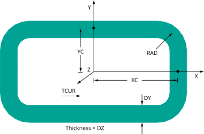

RACE, XC, YC, RAD, TCUR, DY, DZ, --, --, Cname
Defines a "racetrack" current source.
XCLocation of the mid-thickness of the vertical leg along the working plane X-axis.
YCLocation of the mid-thickness of the horizontal leg along the working plane Y-axis.
RADRadius of curvature of the mid-thickness of the curves in the racetrack source. Defaults to .501 * DY
TCURTotal current, amp-turns (MKS), flowing in the source.
DYIn-plane thickness of the racetrack source.
DZOut-of-plane thickness (depth) of the racetrack source.
--,--Unused fields
CnameAn alphanumeric name assigned as a component name to the group of SOURC36 elements created by the command macro. Cname must be enclosed in single quotes in the RACE command line. Cname may be up to 32 characters, beginning with a letter and containing only letters, numbers, and underscores. Component names beginning with an underscore (e.g., _LOOP) are reserved for use by ANSYS and should be avoided. If blank, no component name is assigned.
Notes
RACE invokes an ANSYS macro which defines a "racetrack" current source in the working plane coordinate system. The current source is generated from bar and arc source primitives using the SOURC36 element (which is assigned the next available element type number). The macro is valid for use in 3-D magnetic field analysis using a scalar potential formulation. Current flows in a counterclockwise direction with respect to the working plane.
The diagram below shows you a racetrack current source.
